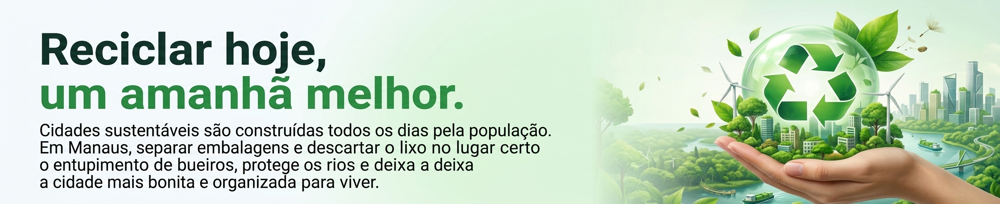
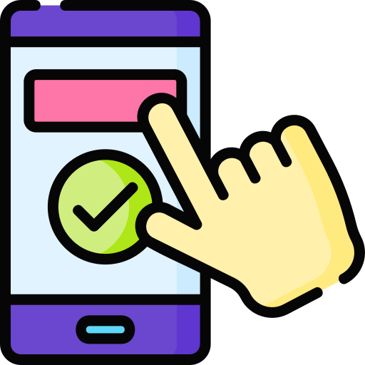

Como funciona a
ClearTech
?
Sustentabilidade do Planeta:
Ao entregar seus materiais recicláveis nas agências ClearTech e registrar o recebimento de pontos, você colabora diretamente para a sustentabilidade do planeta Terra, pois evita que toneladas de resíduos poluam nossas ruas, rios e florestas. Além de dar um novo ciclo de vida a materiais que seriam descartados, você reduz a extração de recursos naturais e ainda transforma sua atitude consciente em benefícios reais no seu bolso em cashbacks.
CashBack na Reciclagem:
Ao entregar seus materiais recicláveis nas agências ClearTech, você ajuda a salvar o planeta e ainda ganha cashback direto no bolso! Cada item reciclado vira saldo para você usar em lojas parceiras, descontos em fast food e até abatimento em impostos — porque cuidar da Terra também pode render ótimas recompensas.
Manaus mais limpa e organizada:
Cidades que colaboram com a ClearTech, a começar por Manaus, mostram na prática como tecnologia e sustentabilidade caminham juntas. Com agências de coleta espalhadas estrategicamente, ajudamos a combater o descarte irregular, preservamos nossos recursos naturais e recompensamos cada morador que faz a sua parte pela limpeza urbana.

Responsabilidade na palma da sua mão:
Com o App ClearTech, reciclar virou uma experiência digital, rápida e recompensadora. Ao levar seus resíduos a uma agência, nosso sistema avalia o tipo, o peso e a qualidade do material reciclável e gera na hora um QR Code exclusivo com o valor do seu cashback. Basta escanear pelo aplicativo para acumular saldo real e trocar por descontos em fast food, lojas parceiras ou abatimento em impostos.
Benefícios do projeto
ClearTech
⇓
- Retorno financeiro direto para o cidadão (Cashback e descontos = Quantidade X Qualidade X Tipo de Reciclável)
- Valorização da qualidade da reciclagem
- Cidades mais limpas e preservação ambiental
- Incentivo à economia circular
- Fidelização e marketing verde para empresas parceiras
- Educação ambiental na prática com tecnologia
Como abaixar o nosso Aplicativo?
Escaneie o Qr-Code para nosso repositório ⇓